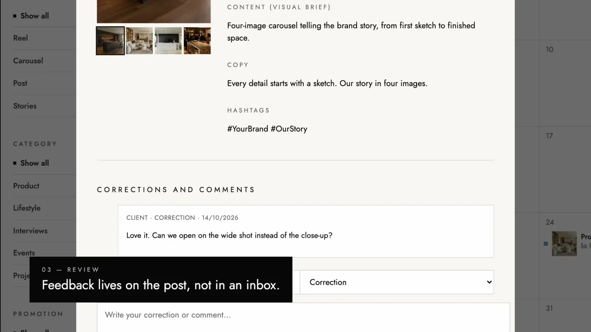
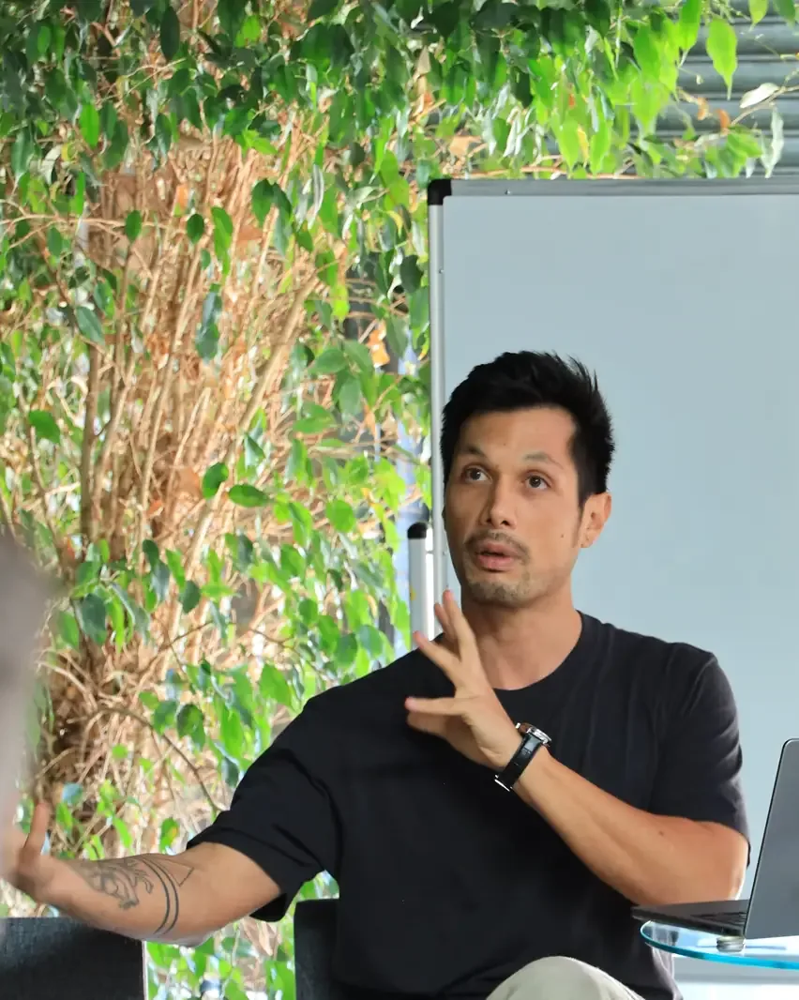

Build AI teams trust.
We help organisations find where AI is worth using, put the right safeguards around it, and build systems their teams trust and use.
Based in Sydney 14+ years in the field Working worldwide
AI does the first pass. A person decides what goes out.
Human approval for consequential actions, built in.
Good AI starts with the right problem.
Most AI projects start with a tool. We start with the work: where time is lost, where decisions stall, where information gets trapped and where customers wait.
Then we bring business context, technical delivery and responsible AI practice together, so what we recommend fits how your organisation runs, and what we build fits the people who use it.
Business-led
Every engagement starts with a business problem and a measure of success, not a tool.
Delivery, not just advice
We take work from assessment through design, build and handover. You get working systems, not slide decks.
Responsible by design
Privacy, security, human oversight and accountability are part of the design from day one.
Built for adoption
We design around real workflows and train the people expected to use the system.

Six services, one connected approach.
Start wherever you are: finding the first use case, building your team’s confidence, automating a process, building software, setting the rules or giving AI an owner.
AI Strategy & Opportunity Assessment
Find the right place to start.We review how work gets done, find where AI can add value and give you a roadmap ranked by impact, feasibility and risk.
Explore AI strategyAI Training & Enablement
Give your people the confidence to use AI well.Briefings, workshops and role-based training built around the work your teams actually do, so experiments become everyday habits.
Explore AI trainingAI Automation & Agentic Systems
Put AI to work inside your operations.We design and build AI workflows, agents and integrations that connect to the systems and data you already use.
Explore AI automationCustom Software & MCP Development
Production-ready software, built around your work.We design, build and ship complete applications, and custom MCP servers that connect Claude and ChatGPT to your own systems and data.
Explore custom softwareAI Governance & Risk
Put clear rules and accountability around AI.Policies, risk assessments and human oversight, sized to how your organisation actually uses AI, so teams can move with clear boundaries.
Explore AI governanceFractional AI Leadership
Senior AI leadership without a full-time hire.Ongoing guidance on priorities, vendors, governance and delivery, so AI has a clear owner and stays tied to business outcomes.
Explore fractional AI leadershipNot sure which service you need? Tell us the problem and we’ll suggest where to start.
Discuss an AI opportunitySoftware we’ve built, running.
We’d rather show you than tell you. Four systems we designed and built, from a government intelligence platform to AI agents.

Government Talent Search
An intelligence tool that helps government agencies find diaspora professionals abroad, assess them with AI and engage them for talent return or investment.

Sherlock
A deal radar that finds startups that have just raised, verifies each round and shows recruiters who to call and why now.

LEICHT Australia Content Hub
A private portal to plan, review, approve and report on social content in one place, with live data connected from Buffer.

Social Studio
An AI content agent that creates and schedules social content in a brand’s own voice across five channels, with a person approving what goes out.
From pilot to production.
Useful AI isn’t a one-off build. We work across the whole cycle, so nothing stalls between the plan and the people using it.
- We map the process, talk to the people doing the work and rank opportunities by value, feasibility and risk.
- Data access, privacy, security and human oversight are agreed before anything goes live.
- We build workflows, agents, integrations and internal tools around your existing processes and systems.
- We train the people who’ll use it and make clear who reviews what, and when to escalate.
- We track performance and adoption against the agreed measure of success, then refine.
Australian hosting is only half the answer.
Where a file is stored and where an AI model processes it can be different. TRACE is a plain-language prompt for asking better questions of any AI vendor.
Read the field noteBusiness context. Technical delivery. Responsible AI.
Integrated Platforms helps organisations turn AI opportunities into trusted systems that people use. These are the people doing the work.

Rodrigo Gutiérrez
Writes our field notes on AI strategy, governance and adoption.
Maria R Alcalá
Field notes for leaders putting AI to work.
Your first automation should be boring.
Start with one small, frequent task people are tired of doing by hand. Pick it, keep review in place and earn the next step.
Rodrigo Gutiérrez Opportunity assessmentMap the process before you touch AI.
An AI agent doesn’t know your clients, exceptions or standards. Map one repetitive task first: pick it, time it, write the walkthrough.
Rodrigo Gutiérrez AI deliveryA wish is not an instruction.
Role, steps, decision rules and output: the difference between a one-off prompt and a repeatable piece of work.
Rodrigo Gutiérrez GovernanceAustralian hosting is only half the answer.
Trace the whole path of your information, not just the hosting claim on a vendor’s homepage.
Rodrigo GutiérrezWe’re not sure which service we need. Where do we start?
You don’t need to know. Tell us what you’re trying to improve and what you’ve tried so far. We’ll suggest a sensible first step, whether that’s an assessment, a workshop or a build.
Do you advise, or do you build?
Both. We assess opportunities and set up governance, and we design and build the systems too: AI workflows, agents, integrations, production software and custom MCP servers for Claude and ChatGPT. See what we’ve built.
Do we need to replace our existing systems?
No. We design around the systems, data and processes you already use, and connect AI to them where it adds value.
How do you handle our data and privacy?
Data access, privacy, security and human oversight are agreed before anything goes live, and the controls are matched to the use case. Our governance work complements legal advice and specialist security testing; it doesn’t replace them.
How are engagements scoped and priced?
Scope, responsibilities and deliverables are agreed before work begins. An engagement can be a defined project, a training programme or an ongoing advisory arrangement.
Where are you based?
Sydney. We work with organisations across Australia and internationally.
Find the right AI opportunity for your organisation.
Whether you’re working out where to start, fixing an AI initiative that has stalled or need ongoing leadership, we’ll help you define the next step.